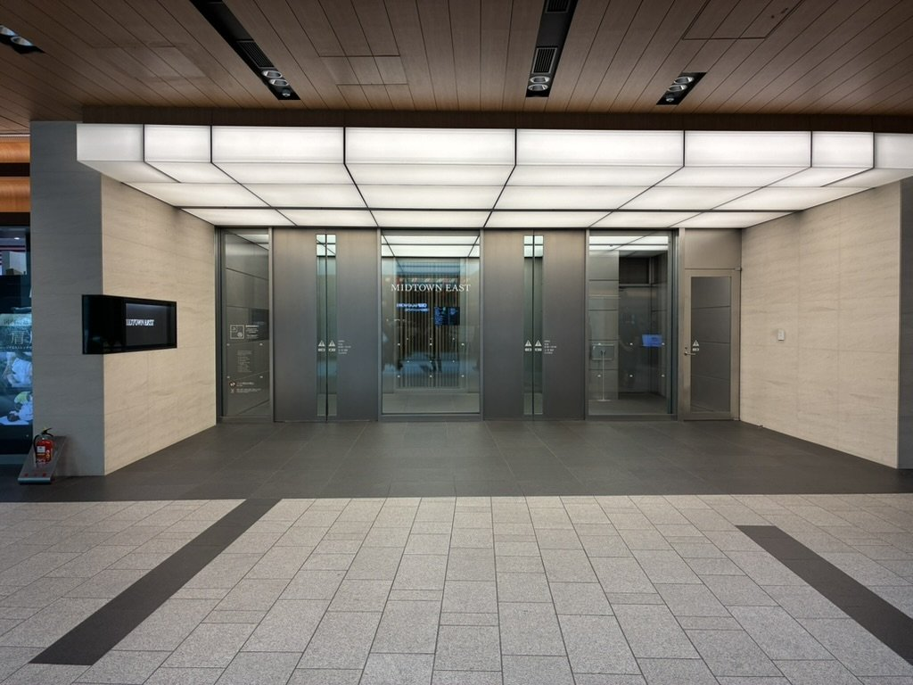
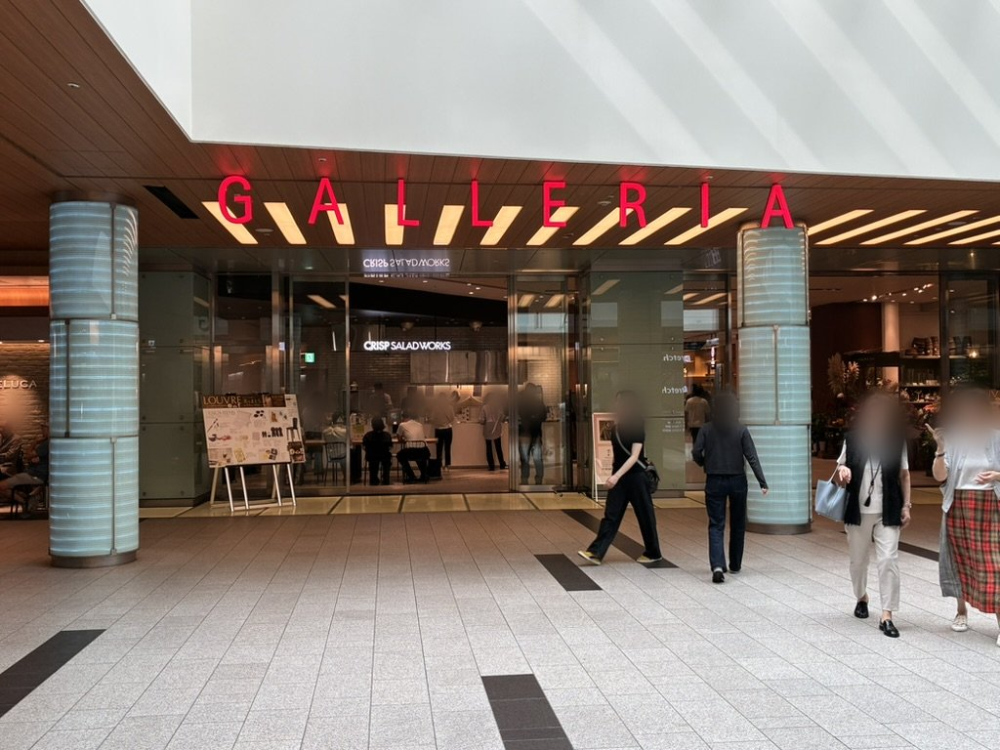
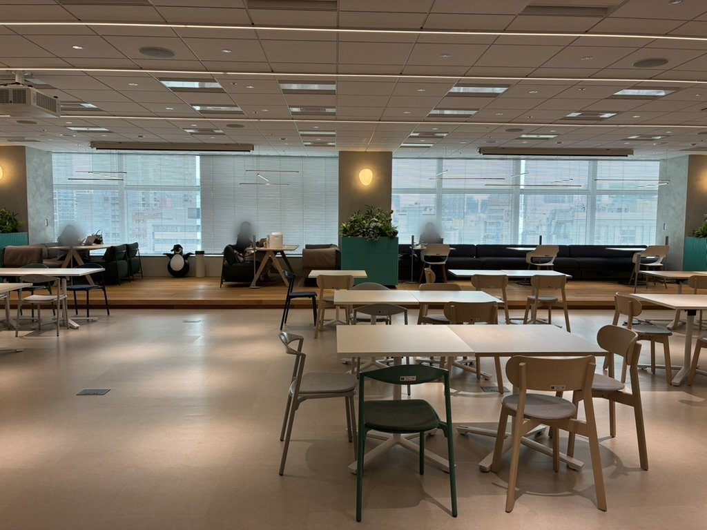

このカンファレンスは終了しました。ご参加ありがとうございました。開催レポートはこちら →
CONFERENCE 2026｜会場参加の方へ
マシン・
コンシャスネス
当日のご案内
2026.10.24 Sat – 10.25 Sun｜東京ミッドタウン ミッドタウン・イースト 7階
カンファレンス「マシン・コンシャスネス」に会場参加でお申し込みいただいた方へ、当日の会場とご来場の方法をご案内します。とくに集合場所は、ご来場の前に必ずお読みください。
日時
Date & Time
DAY 1
10月24日（土）
13:00〜18:00
18:00〜 懇親会・ポスター発表
DAY 2
10月25日（日）
13:00〜18:00
18:00〜 ポスター発表
- 両日とも12:30に受付を開始します。
- お申し込みいただいた日以外の日にご参加いただいても、問題ありません。
時間割の変更について
当初のご案内から時間割を変更しました。DAY1の講演のあとに総合ディスカッション（17:00〜18:00）を加えたため、懇親会・ポスター発表は18:00からになりました（当初は17:15から）。
会場
Venue
東京ミッドタウン ミッドタウン・イースト 7階東京都港区赤坂9-7-2
- 都営大江戸線「六本木駅」8番出口から直結
- 東京メトロ日比谷線「六本木駅」から地下通路で直結
- 東京メトロ千代田線「乃木坂駅」3番出口から徒歩約3分
必ずお読みください
集合場所
Meeting Point
東京ミッドタウン地下1階（B1）の「PLAZA（プラザ）」にある、「MIDTOWN EAST（ミッドタウン・イースト）」の入口にお集まりください。プラザに面してセブン-イレブン（E）、Dr.ストレッチ（F）と店舗が並び、その先の、Dr.ストレッチ（F）とトモズ（G）の間が入口です。（ ）内の記号は下の案内図の記号です。ショッピングエリア「GALLERIA（ガレリア）」の入口の向かい側にあたります。
集合場所は地下1階の屋内です。屋外ではありません。
都営大江戸線・東京メトロ日比谷線の「六本木駅」からは、地下通路でそのまま地下1階に入れます（下の図の右下）。
地下1階の案内図 位置関係を大まかに示した略図です（縮尺は正確ではありません）。詳しくは東京ミッドタウンの公式フロアマップ（地下1階）をご覧ください。

集合場所 地下1階「MIDTOWN EAST」の入口

目印 「GALLERIA」の入口。集合場所はこの向かい側です
- 土日はビルの入口が社員カードでしか開きません。集合場所に案内スタッフが立ち、入口を開けてご案内します。
- 入館証は当日、集合場所でお渡しします。お手洗いへの行き来には、入館証は要りません。
- 案内スタッフが集合場所に立つのは13:30までです。13:30以降に到着される方は、当日の連絡先にお電話ください。スタッフがお迎えに上がります。
当日の連絡先の電話番号
090-7037-2946
この番号は、当日（10月24日・25日の土日）の連絡専用です。普段は別の用途で使っている携帯のため、土日以外にお電話いただいても対応できません。それ以外のお問い合わせは、ご案内メールへのご返信、または info@technel.world までお願いします。
当日は集合場所の立て看板にも掲示します。
会場内での過ごし方
At the Venue
土日はビルの出入りに案内が必要なため、いったん会場に入ると、外へ出るのは難しくなります。
会場内には、オンライン会議用のブース、PC作業ができるスペース、お飲み物があります。講演の途中で席を外していただいても問題ありません。

会場イメージ ミッドタウン・イースト 7階
プログラム
Program
DAY 1 ── 10.24 Sat
マシンの意識と
ヒューマンの意識
司会：吉澤駿
12:30受付開始
13:00–14:00基調講演 金井良太AIの中に、誰かいるのか？
14:00–15:00渡邉正峰AIは意識をもちうるか？それをどう確かめるか？
15:00–16:00茂木健一郎意識の超越性と単一性
16:00–17:00信原幸弘意識と汎用表象
17:00–18:00総合ディスカッション
18:00–懇親会・ポスター発表司会：渋川駿伍（Kakedas）
DAY 2 ── 10.25 Sun
マシンの意識と
モア・ザン・ヒューマンの意識
司会：堀部和也
12:30受付開始
13:00–14:00基調講演 池上高志やはり意識の創発に身体性は重要か？
14:00–15:00鈴木大地高次予測プロセスとしての意識：（人工）生命から（人工）意識への橋渡し
15:00–16:00染谷昌義モア・ザン・神経生物の意識――アニマシー心理学と「いのち」の生態学
16:00–17:00鈴木啓介（オンライン）人工外部性 — テクノロジーから意識と現実を問い直す
17:00–18:00下西風澄「別の心」としてのAI
18:00–ポスター発表
基調講演は講演45分＋質疑15分、各講演は講演30分＋討論30分の、議論を中心にした形式です。講演タイトルは決まりしだい追加します。登壇者・プログラムは変更になる場合があります。
懇親会・ポスター発表
Reception & Posters
DAY 1 ── 18:00〜
懇親会
参加費無料・同じ会場で行います
DAY 2 ── 18:00〜
ポスター発表
講演終了後、同じ会場で行います
- 懇親会の司会は、渋川駿伍さん（Kakedas）です。
- はじめに、ポスター発表者によるフラッシュトーク（お一人3分程度）を行い、そのあとポスター発表のコアタイムを設けます。
- 軽食と、お酒を含むお飲み物をご用意します。ゆっくりご歓談ください。
- お申し込みのときに懇親会の出欠を「未定」とされた方も、当日のご判断でご参加いただけます。
撮影・記録について
Recording
当日の講演はオンラインで配信し、記録・書籍化のために録画・録音します。
会場の様子を撮影し、報告などに使わせていただくことがあります。写り込みを避けたい方は、受付でお申し出ください。